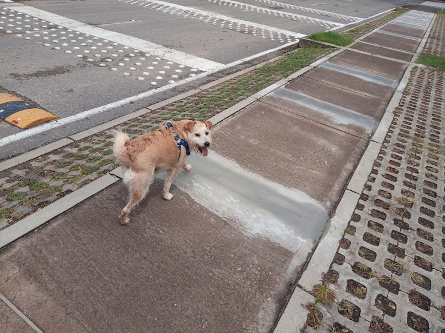
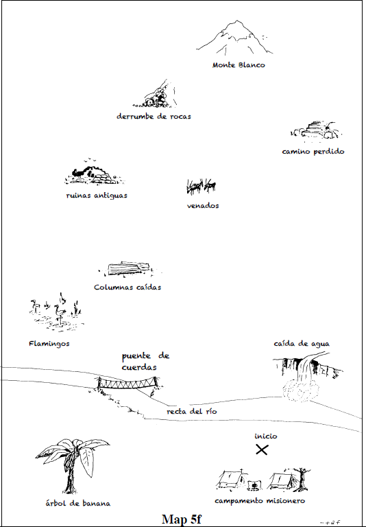

Tareas de recolección de datos para la investigación fonética
Paradoja del observador
«Para obtener datos lingüísticos relevantes debemos observar cómo habla la gente cuando no está siendo observada» (Labov 1974, 113)

Encuesta de situaciones
Mira el dibujo y di lo que hace la niña

Estás paseando al perro, Bobi, y se te escapa. Llámalo

Tareas de mapas


Habla conversacional

Torreira and Ernestus (2010)
Coda
¬°Gracias por su atenci√≥n! ü§ò
üåé https://jacorread.github.io/
✉️ alejandro.correa@caroycuervo.gov.co
 https://twitter.com/sci_phonetics
https://twitter.com/sci_phonetics
üßë‚Äçüíª hhttps://tinyurl.com/tareasfonetica
Bibliografía
Anderson, A. H., E. G. Bader M. anf Bard, E. Boyle, G. Doherty, S. Garrod, S. Isard, J. Kowtko, et al. 1991. “The HCRC Map Task Corpus.” Lang. Speech 34: 351–66. http://www.hcrc.ed.ac.uk/ maptask/.
Grønnum, N. 1984. “A Danish Phonetically Annotated Spontaneous Speech Corpus (DanPASS).” Speech Communication 51: 594–603.
Labov, William. 1974. “Some Principles of Linguistic Methodology.” Language in Society 1 (1): 97–20.
Llisterri, Joaquim. 1991. Introducción a La Fonética: El Método Experimental. Barcelona: Anthropos.
Niebuhr, O., and A. Michaud. 2015. “Speech Data Acquisition: The Underestimated Challenge: Theoretical and Empirical Foundations of Experimental Phonetics.” Edited by Universität zu Kiel. KALIPHO 3: 1–42. https://halshs.archives-ouvertes.fr/halshs-01026295v4/document.
Prieto, Pilar, and Paolo Roseano, eds. 2010. Transcription of Intonation of the Spanish Language. Muenchen: Prieto2010Lincom Europa.
Schilling, Natalie. 2013. “Surveys and Interviews.” In Research Methods in Linguistics, edited by Robert J. Podesva and Devyani Sharma, 96–115. Cambridge University Press.
Torreira, F., and M. Ernestus. 2010. “The Nijmegen Corpus of Casual Spanish.” In Proceedings of the Conference on Language Resources and Evaluation, 2981–85.
Wagner, Natasha. 2011. “Methods for Studying Spontaneous Speech.” In The Oxford Handbook of Laboratory Phonology, edited by A. C. Cohn, C. Fougeron, and M. Huffman, 621–33. Oxford University Press.